December 2004
CodeEditor
Introduction
This chapter describes only the general aspects of the code-editor. For some code-editors, like Batch and the High-Level-languages JAL,PICbsc and XCSB the code-editor has a lot more features, see the inidividual chapters.
Todo
Special Keys
Some keys has changed, compared to versions prior to V1.0. The most important changes are
|
F3 Shift+F3 |
Find Next (from search buffer) shift-F3 = Find Previous |
|
F4 Shift+F4 |
Find Next from word under cursor shift+F4 = Find Previous This is very handy, when tracing code in the High-Level-language <--> assembler listing. |
Block Selection
By holding the Alt-key, you can select a non-zero based block with the left-mouse button. This block can be paste, cut and copied.

Bookmarks
|
Bookmarks are used to jump fast from one position in the current file to another position in the current file (The special code-editors can jump through bookmarks to other files and also saves the bookmarks positions).
The default keys for Bookmarks are Ctrl + Shift + <0..9> set/clear Bookmark <0..9> Ctrl + <0..9> jump to Bookmark <0..9> |
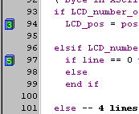 |
Autocompletion & Macros
(Syncompletionproposal heeft 2-SM-wijzigingen !!
cthint+ctparams not ok !!)
There a number of ways to automate the typing of code. In JALcc, all except one (JALcc-macros), will change the text immediatly. JALcc-macros don't change the text directly, but are used in a preprocessor, between visible screen and file. In fact JALcc-macros cann be seen as inline dynamically changeable procedures or functions.
The following (direct) completion/substitution mechanisms are available:
1. Autocompletion while you're type
2. Shortcut-strings, can evaluate to complete textblocks
3. Ctrl+Alt+<char> substitution
4. Template Insertion
AutoCompletion by Proposal
This functionality can be turned on/off.
As soon as the first letter of a new word is entered, autocompletion generates and shows a popup, with all words(sentences) of which the first part matches the typed word. Selection of the right word is done either by selected a word from the list or by typing more letters, until there's just one word left in the list. After selection, the word (or sentence) is inserted in the text.
With the ESC key you can explicitly hide the list of matches. If the list contains no matches it hides itself.
The list of words / sentences can be fully edited by the user.
|
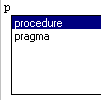
after pressing enter: 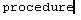 |
It's important that the most common used words are also the topmost words.
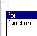 |
If no matches occure, no popup list is shown:
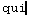
Complete sentences can be inserted 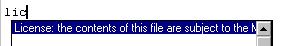 |
Editing the Autocompletion strings ..
String Macros
Shortcut strings can replace a few letters, with a complete text
|
Typing a few (user specified) letters, in this example
followed by a Shift+Enter, "pi" will be replaced by the text on the right. The template can also specify where the cursor should be placed after insertion, in this case at the position where the interrupt completion code should be inserted. The list can be fully controlled by the user. This feature can be turned on /off. |
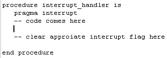 |
Editing the shortcut strings ...
Ctrl + Alt + <char>
With the Ctrl+Alt+<char> macro you can insert complete blocks of formatted code, which can contains "fields" that can easily stepped through by the F10-key.
|
On the right you can see the result just after the substitution is done, the cursor starts at the first field "number", you can start right away typing the correct letters, which will replace "number" (including the double-quotes). There's an equal substitution list for Shift+Ctrl+Alt+<char>. |
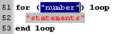 |
Editing the Ctrl-Alt-lists ...
Template Insertion
|
The visibility of templist is controlled by F9-key. After doubleclicking on an item in the template list, the following text (with fields) could be generated: 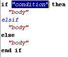 The template list is completly definied by the user. For instance you could also add the often used procedures to this list. Editing of the template list ... |
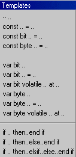 |
Printing
You can either print the whole file or the selected part. When printing, the general background color is removed.
If the printed file is the main-language file, there are some extra possibilities to include some project information.
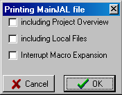
Page Setup gives the possibilities to define marges, headers and footers.
These page settings are stored in the inifile and only yields for the code-editor.
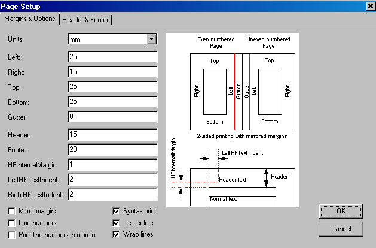
Insertion of the special items (title, date etc) can be done by the speedbuttons at the top.
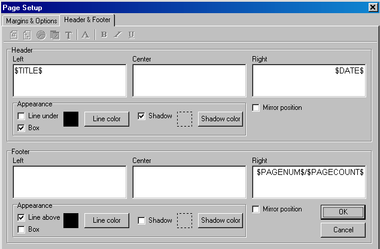
The printer dialog doesn't support page selection (there's no real need for, because most code files are relative small and there also exists the possibility to print the selected text only).
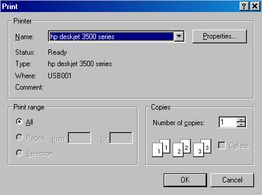
Print Preview
The rendering of the preview is printer dependant, therefor the selected printer and papersize is displayed at the top.
Only 2 zoomfactors are available: full-page and full-pagewidth.
The following keys/mouse actions are implemented:
Not implemented (yet ?) are
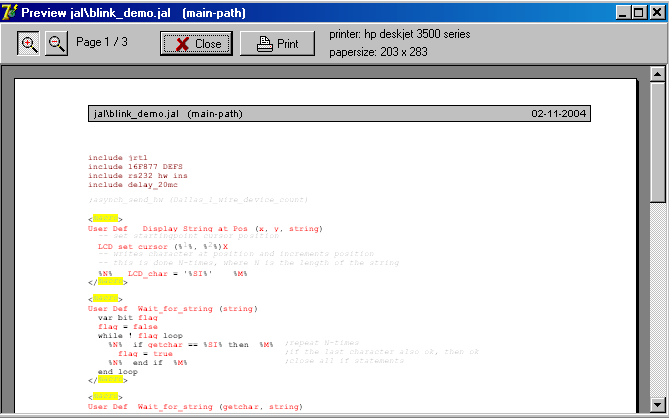
|
The templates overview serves two purposes
With F10 you can jump to the next insertion field. The visibility of the templates window can be toggled by F9. If you don't like (or don't need) the templates, you can simply change all of it and use it for some other purposes. See template_editing ...
|
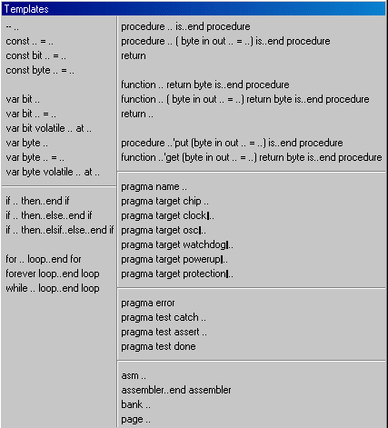 |